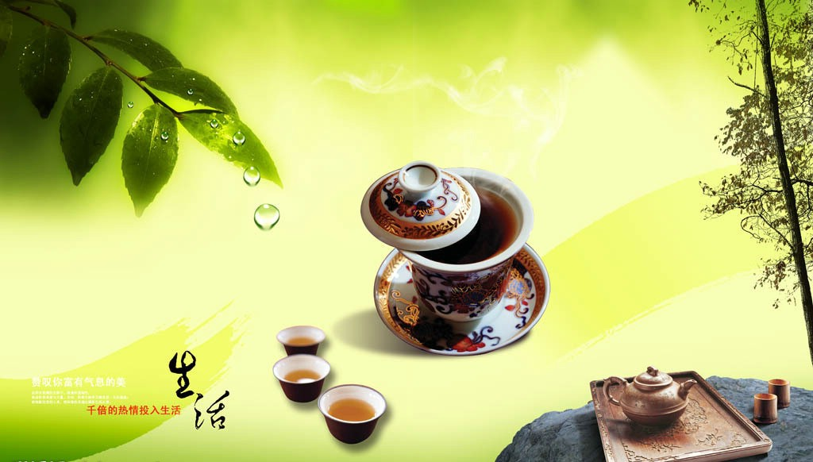

品位人生

有人把人生比作一杯咖啡，有苦的滋味，也有甜的香醇。我却感觉人生似一杯美酒，不同的人在品酒时有着不同的感觉。会品酒的人，把品酒作为一种乐趣，四溢的酒香会沁人心脾，让人感到韵味无穷，妙趣横生；而不会品酒的人，就会把品酒当成一种负担，酒的辛辣会难以入口，只能拒以千里之外，痛苦难挨，感到酒平淡无奇，丝毫感不到其中的乐趣。
人都是哭着来到这个美丽的人间。每个人从来到尘寰到升入天堂，整个生命的历程都是一本书，至于写得好写得坏、写得厚写得薄、写得精彩还是写得平庸，全看你自己如何下笔，别人是无法代替的。 一个人的生命是短暂的，只有昨天、今天和明天。我们就应该把握今天，做好今天该做的事情；在回味昨天的时候，就不会留下悔恨；展望明天，怀揣梦想。有了梦想，就有了希望，就有了灿烂的阳光。时光就不会虚度，心也不会彷徨，内心也会充满了无限的力量。那一幅幅美景也会驻留在你人生的道路上，回眸时，心中无比欢畅！ 送人玫瑰，手留余香。人生应懂得取舍。拥有海一样的胸怀，就会拥有一片晴朗的天空。拥有宽广的胸怀，就能够正确地看待自身与他人的差别；你既不会自轻自贱，崇拜英雄和偶像，把任何人都看得比自己优越，对自己产生自卑；也不会盲目自信，无谓地贬低他人，更不会因别人的权力、财富、地位而愤愤不平，你会愿意以自己的实力战胜对手，而不是因对手的缺陷使自己获胜。你没有时间兴灾乐祸；没有时间评论别人。你只是忙于自己追求的事业，你不会计较在每件事情上是否公平，只愿自己的内心快活与充实。同时更希望自己的存在，给他人带来快乐，让周围的环境因你的存在而笑声不断．为别人着想意味着给你插上一对翅膀，因为你把自己的快乐带给了别人，与人同乐，快乐就增倍；同时你也真正了解别人痛苦，与他分担，就会给人减轻痛苦．以诚感人者，人亦诚而应。你就会有缘成为真正的朋友，真正的朋友就是在你流泪的时候为你播种快乐的人，朋友能为你做到这一点，相互就会结成天长地久的友情。苦乐同行，才能同舟共济。 人有个好的心态，才能延续生命。人生在世，往往都是在坎坷中求生存，在平凡中绘美景。无论在生活中，还是在网上，都应该有个好心情。好的心境对健康很有好处的。对一切事情的发生都应该正确对待，认识到事情是不可避免；正确认识自己，让自己经常处于一种宁静的状态．在生活中默默地做自己喜欢并感兴趣做的事情，让自己感到生活的充实；在工作中保证质量地完成自己的本职工作，不求有功，只求无过。淡泊名利，平衡得失。 有心能知，有情能爱，有缘能聚，有梦能圆。无论在生活中，还是在网上，每个人都有自己的择友标准，有了相知的缘分，就渴望文字的交流，友情的加深，会成为知己，友情的关爱会让人感到心中的温馨，有了友情的牵挂，人生就不感觉孤单，内心的情感也会变得丰富。虽然有时情到深处，成为一种心的默契，人生无奈难舍的那份牵挂会让你流泪，但内心中是一种幸福，也是一种驻留在心底的美丽，把这种美丽作为一种一生寻求的梦，也许有一天这个梦就能变成现实。生活中的朋友常聚首，会放松一下心情，有个美好的心境，健康快乐度过每一天。 常怀感恩之心，成人之美，时时感到自身的一种责任。对家庭、对社会、对朋友，那么你就会总是感到得到的太多，而自己做得太少。你就会以自己的热情去做好每一件事情，这种热情会感染他人，你就会聚集很多同路人。 让我们拥抱美好的生活，珍视健康，注重生命的质量，拥有一个无怨无悔、五彩缤纷的人生。